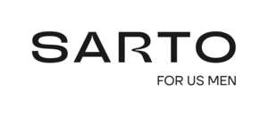

Trade Mark Journal No.2025/033 15 August 2025
UK00004245372 6 August 2025 (3,5,35)

- Class 3
- Antiperspirants [toiletries]; Aromatics [essential oils]; Balms, except for medical use; Cosmetic creams; Skin lightening creams; Decorative decals for cosmetic use; Deodorants [perfumery]; Essential oils; Cosmetic kits; Massage gels, except for medical use; Hair lotions; Lotions for cosmetic use; Facial makeup; Cleansing oils; Oils for perfumes and essences; Oils for cosmetic use; Ointments for cosmetic use; Bath preparations for intimate hygiene or deodorant use [personal hygiene products]; Collagen preparations for cosmetic purposes; Depilatory preparations; Phytocosmetic preparations; Hair straightening preparations; Personal hygiene preparations; Hair curling preparations; Sunscreen preparations; Cosmetic products for skin care; Perfumery products; Neutralizing products for hair permanents; Makeup products; Soaps; Toilet soaps; Bath salts, except for medical use; Adhesive substances for cosmetic use; Cosmetic dyes; Hair dyes; Shampoos.
- Class 5
- Eye drops; Compresses; Medicinal herbs; Herbal extracts, except essential oils, for medicinal purposes; Massage gel for medical use; Wart-removing pencils; Almond milk for pharmaceutical use; Antibacterial lotions for hand washing; Medicinal hair lotions; Castor oil for medical use; Ointments for medical use; Balsamic preparations for medical use; Aloe vera preparations for pharmaceutical use; Pharmaceutical preparations for dandruff treatment; Pharmaceutical preparations for skin care; Pharmaceutical preparations for treating sunburn; Phytotherapeutic preparations for medicinal purposes; Medicinal toiletry preparations; Medicinal preparations for hair growth; Nutraceutical preparations for medical or therapeutic use; Intimate hygiene preparations for medical use; Preparations for acne treatment; Therapeutic bath preparations; Antibacterial soap; Aromatic salts; Massage candles for therapeutic purposes; Medicinal dry shampoos.
- Class 35
- Retail or wholesale services for cosmetics; Retail or wholesale services for perfumery products; Retail or wholesale services for dietary substances for medicinal use; Retail or wholesale services for hair lotions; Retail or wholesale services for essential oils; Retail or wholesale services for combs and sponges; Retail or wholesale services for brushes; Retail or wholesale services for non-medicated personal hygiene preparations; Retail or wholesale services for soaps; Commercial representation; Providing an online marketplace for buyers and sellers of goods and services; Franchise management; Organization of events for advertising and/or commercial purposes.
RBBR PRODUTOS DE EMBELEZAMENTO, ACESSORIOS E PRODUTOS HIGIENICOS LTDA
Representative: Marcaria.com LLC